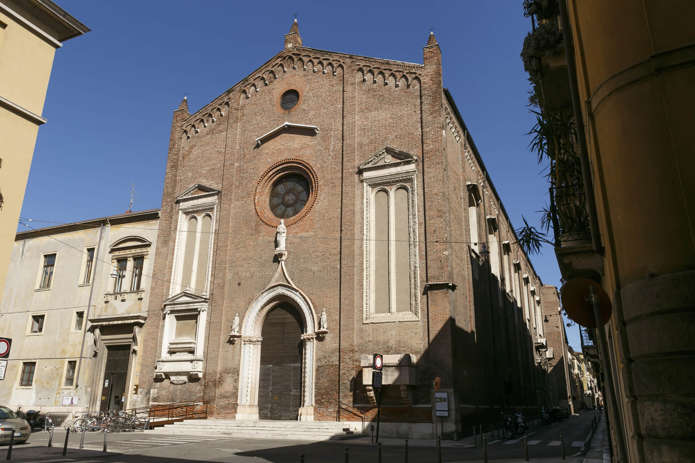
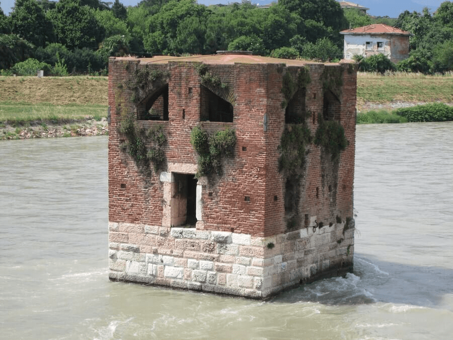
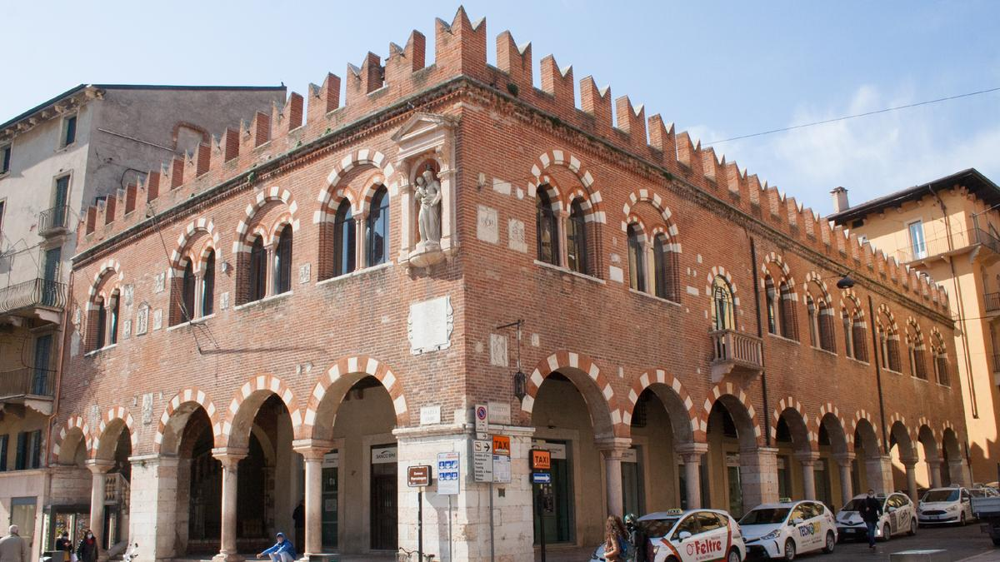
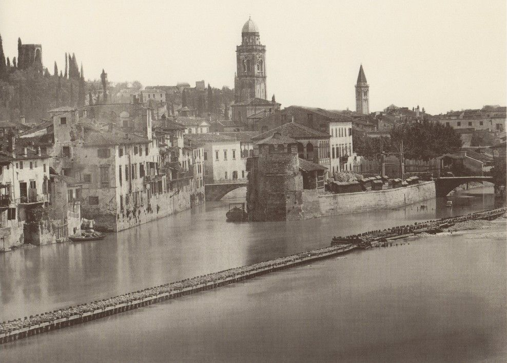

San Fermo Maggiore è una chiesa storica e religiosa di Verona, dedicata ai santi Fermo e Rustico, martiri nel 304. La chiesa ha due livelli: la cripta romanica del X secolo, che custodisce le reliquie, e la chiesa superiore gotico-rinascimentale, che fu rinnovata dai francescani tra il XIII e il XIV secolo. La chiesa mostra una varietà di stili architettonici e artistici. La facciata della chiesa è una fusione di stili romanico e gotico, con rosoni, finestre a ogiva e un portale bronzeo che racconta le storie dei santi.
L’interno della chiesa è a navata unica con cinque absidi, e ospita numerose opere d’arte, tra cui affreschi, sculture, altari e monumenti funerari. Il tetto ligneo della chiesa superiore di San Fermo Maggiore è una delle caratteristiche più notevoli dell’edificio. Si tratta di un soffitto a carena multipla di nave, formato da sedici capriate di 53 metri di lunghezza poste su un’altezza di oltre venti metri. Il legno usato è il larice rosso, molto resistente al tempo e agli insetti. Il soffitto è decorato con 416 busti di santi dipinti negli archetti tra le capriate, opera di vari artisti tra il XIV e il XV secolo.
All’interno della chiesa possiamo notare il Monumento funebre di Niccolò Brenzoni, un’opera scultorea e pittorica di Nanni di Bartolo e Pisanello, situata nella Chiesa di San Fermo Maggiore di Verona. Il monumento è decorato con una cornice a treccia, dei tendaggi e una scena dell’Annunciazione, che mostra san Gabriele arcangelo, Maria Vergine e alcuni animali. L’opera è caratterizzata da un ricco uso del colore e del rilievo, in stile gotico.
La Chiesa di San Fermo è stata spesso associata alla leggenda di Romeo e Giulietta, la celebre storia d'amore scritta da William Shakespeare. La leggenda narra che la chiesa era il luogo di sepoltura della famiglia Montecchi, una delle famiglie rivali nella storia di Verona. Anche se la storia di Romeo e Giulietta è puramente una creazione letteraria, la chiesa ha attratto visitatori romantici ispirati dalla storia e dalla sua atmosfera.
Nel XIII secolo i Della Scala portarono a Verona i monaci dell’ordine eremitico di Sant’Agostino affinché fossero più vicini alla comunità e concessero loro, vicino alla Via Postumia, una chiesetta romanica che fu poi sostituita da una chiesa più ampia, consacrata nel 1331 dal vescovo di Verona a Sant’Eufemia, e da un nuovo convento. Essa sorge nel cuore del centro storico di Verona, infatti è ubicata in prossimità dell’Adige e del tracciato delle mura romane, a pochi passi da Porta Borsari e ponte della Vittoria.

Si ritiene che la chiesa possa risalire almeno al VI secolo e che si estendesse per un solo isolato dell’antico tessuto urbanistico romano, proprio per la sua collocazione. Nel 1117 Verona venne colpita da un devastante terremoto che distrusse o danneggiò gravemente molte chiese, tra cui quella di Sant’Eufemia. Successivamente la chiesa venne ricostruita probabilmente sulla base dello stile romanico veronese, con la facciata e l’interno divisi in tre navate, come gli altri edifici veronesi risalenti a quell’epoca. Nel basso medioevo (nella metà del XIII secolo), poi, gli Scaligeri presero il potere a Verona e promossero una politica favorevole alla chiesa, favorendo l’entrata in città di diversi ordini religiosi, tra cui quello degli Agostiniani, a cui fu offerto di trasferirsi in Sant’Eufemia. Il 16 settembre 1262, quindi, si svolse una cerimonia a cui parteciparono chierici, popolo e notai, e successivamente fu ufficializzato il subentro a pieno titolo dei monaci, guidati da Fra Norandino.
Tuttavia, la chiesa era in cattive condizioni e quindi gli agostiniani dovettero ottenere, attraverso acquisti e donazioni, aiuti per sistemare l’edificio e terreni sui quali sarebbero poi stati costruiti altri edifici legati alla loro vita cenobitica. Nel novembre del 1265 il vescovo di Verona diede il permesso di porre la prima pietra di quello che era l’edificio attuale mentre, dopo dieci anni di attesa per l’avvio effettivo del cantiere, il legato pontificio e vescovo di Ferrara diede il secondo permesso per iniziare la costruzione. Gli Agostiniani contarono sulle donazioni e i favori del popolo veronese, ma più di tutti gli Scaligeri, in particolare Alberto I Della Scala, li beneficiarono. I lavori procedettero ancora per alcuni anni e la chiesa venne finalmente consacrata nel 1331.
Negli anni successivi, a causa dell’aumento del numero di monaci arrivati nel monastero, si dovettero ampliare gli ambienti dedicati all’alloggio e allo studium. Il chiostro, inoltre, venne rinnovato e le sue pareti decorate con affreschi. Secondo le cronache, Dante Alighieri venne ospitato nella foresteria di questo convento; tra i manoscritti della biblioteca vi era probabilmente quello della conferenza “Quaestio de Aqua et Terra”, che il poeta tenne nella chiesetta di Sant’Elena nel 1320. È probabile che tra la fine del XIV secolo e gli inizi di quello successivo fosse già stata ultimata, almeno in parte, la torre campanaria, mentre negli anni che seguirono si passò a decorare e arricchire gli interni della chiesa. Per tutto il XVI secolo la chiesa fu oggetto d'intense operazioni di abbellimento dei propri interni secondo il gusto tardo-rinascimentale. Nei primi decenni del secolo si provvedette a restaurare la sagrestia e a decorare l'altare maggiore che venne impreziosito con tre formelle bronzee, inoltre, moltissimi artisti della scuola veronese di pittura dettero il loro contributo nella realizzazione di tele e pale d'altare esposte all'interno.
Anche il XVIII secolo fu caratterizzato da intensi lavori che modificarono la fisionomia della chiesa. L'intervento più importante attuato all'interno coinvolse il soffitto dove venne creata una volta a botte tanto vasta da coprire tutta la navata e da nascondere le antiche capriate lignee, perfettamente visibile ancora adesso. Sul fianco destro vennero murate le trecentesche finestre e sostituite con semplici aperture di forma rettangolare. Nella prima metà del Settecento, tuttavia, oltre che queste trasformazioni vi fu anche l’inizio della decadenza del monastero. Nel corso del tempo il numero di monaci diminuì progressivamente e in seguito l’arrivo delle truppe napoleoniche causò il “collasso” definitivo della struttura: la chiesa fu chiusa così come le attività religiose terminarono, l’edificio fu svuotato dei suoi arredi e infine trasformato in un ospedale militare. La stessa cosa accadde diverse volte durante altri conflitti nel tempo.
Una complessiva riorganizzazione della diocesi di Verona portò Santa Eufemia, nel 1806, a essere elevata a chiesa matrice assorbendo, di conseguenza, altre parrocchie limitrofe, tuttavia in seguito furono oppressi tutti gli ordini religiosi della città e anche gli agostiniani dovettero lasciare il convento. Il 25 aprile 1945 l'esplosione del vicino ponte della Vittoria, fatto saltare dai soldati tedeschi in ritirata alla fine del secondo conflitto mondiale, danneggiò gravemente la facciata della chiesa. Nello stesso anno si provvedette prontamente a restaurarla optando, tuttavia, per introdurre un rosone che conferisse all'edificio il suo aspetto originario medioevale. Attualmente, dunque, ciò che si vede della chiesa risale alle ultime restaurazioni, ma è possibile vedere anche gli interventi più antichi.
La pianta della chiesa è ad aula unica (dunque una sola navata) ed è caratterizzata da un andamento marcatamente longitudinale, infatti questa chiesa è la più lunga di Verona. Il transetto è dotato di bracci di profondità particolarmente ridotta e un presbiterio rialzato di due gradini rispetto al resto dello spazio, terminante in un'abside a cinque lati.
La chiesa presenta una facciata a capanna orientata verso sud-ovest e realizzata in mattoni di laterizio. L'ingresso, che è preceduto da una scalinata in pietra bianca, consiste in un portale con arco a sesto acuto e piedritti strombati, ed è coronato da una statua raffigurante Sant'Eufemia. In alto e in asse con il portale è presente il rosone protetto da un doppio spiovente in pietra bianca, e sopra questo vi è un occhio di dimensioni minori. Ai lati del portale, sopra mensole decorate a fogliami scolpiti, vi sono due statue raffiguranti probabilmente delle sante guerriere che in origine dovevano essere dotate di armi e scudo. Ai lati del portale si trovano due bifore cieche con timpano. La facciata si conclude con un sotto gronda decorato da archetti pensili ed è coronata da tre pinnacoli, sempre in laterizio. I prospetti laterali sono sempre in laterizio ma scanditi da lesene impostate su un alto basamento, infine coronati da archetti pensili; tra le lesene, inoltre, si aprono ampie finestre ad arco ribassato, che illuminano lo spazio dell'aula interna. La chiesa presenta giustamente un campanile, addossato al fianco sinistro del presbiterio, con un basamento a pianta quadrata e un massiccio fusto in mattoni in cotto. Nella cella campanaria, sormontata da una copertura conica e quattro pinnacoli, si aprono diverse trifore.
Adiacente alla chiesa, infine, si trova il chiostro caratterizzato da una successione di archi a tutto sesto, sostenuti da alte colonne e capitelli di ordine tuscanico. Sopra gli archi, una cornice continua separa l’ordine superiore, costituito da una parete piena su cui si aprono delle finestre con timpano poste in corrispondenza dei vani inferiori. L'aula è coperta da una volta a botte a sezione semi-ellittica, realizzata in incannucciato. In muratura, invece, la copertura a volta a botte del presbiterio.
Sui fianchi dell’aula si alternano lesene di ordine composito impostate su un alto basamento e reggenti la trabeazione, tra le quali trovano spazio quattordici altari, sette per lato; nel transetto, separato dalla navata mediante una serliana (un arco a tutto sesto affiancato simmetricamente da due aperture sormontate da un architrave che poggia su due colonne) su pilastri su cui è dipinto un coro di angeli, si trova un altare dedicato al Santissimo, nel braccio destro, e il battistero, nel braccio sinistro. Le decorazioni e gli stucchi che danno uniformità all’interno di Sant’Eufemia furono aggiunti verso la metà del secolo scorso.
Appena entrati, sul lato destro della navata, è appeso un quadro seicentesco raffigurante una Maddalena. Di seguito, si trovano in ordine sette altari realizzati in varie epoche e al loro termine il vano dell'ingresso laterale. Tutti gli altari presentano bene o male le stesse figure ripetute, o meglio sono caratterizzati dalla presenza o meno della Madonna, attorniata da diversi santi. Se, dopo essere entrati si guarda la parte sinistra della navata anziché la destra, è possibile osservare una tela raffigurante Crocifisso con la Madonna, San Maria Maddalena e San Giovanni. Subito dopo si incontra il primo altare di sinistra, che sostituì nel XVIII secolo l’altare precedente, e così via con gli altri sei.
Nel braccio sinistro della crociera si trova il fonte battesimale realizzato in marmo rosso di Verona e scolpito con semplici modanature. Sopra di esso si trova l’organo. Sulla parete di sinistra della crociera si apre inoltre una porta con timpano attraverso la quale si accede ad un breve corridoio che conduce alla sagrestia della chiesa. Nel braccio destro della crociera vi è un interessante affresco staccato, Incoronazione della Vergine, scoperto nel 1966 dopo la rimozione di un mobile e restaurato tre anni più tardi. Terminata la navata di destra, si trova una porta dalla quale si accede alla parte destra dell’abside, occupata dalla cappella Spolverini-Dal Verme. Oggi dedicata agli angeli, in principio era consacrata all'Arcangelo Raffaele; la cappella presenta interessanti elementi pittorici e architettonici. In fondo alla navata sinistra e di fianco al presbiterio, invece, si apre la cappella di Santa Rita, edificata alla fine del XIV secolo. Essa occupa l’abside minore. È conosciuta anche come cappella di Sant'Agostino poiché al suo interno è conservato il celebre affresco Gloria di Sant'Agostino.
In chiesa, nella cappella di Sant’Agostino, si conserva la lastra funeraria dei figli di Guido Novello da Polenta, colui che ospitò Dante a Ravenna. Come accennato all’inizio, si è ipotizzato che gli eremitani veronesi abbiano dato ospitalità a Dante, ma non si ha alcuna prova documentata certa al riguardo. Che il poeta abbia frequentato il convento non è tuttavia improbabile, dato il prestigio culturale dell’ordine e della sede di Sant’Eufemia, con il suo studium. La chiesa di Sant’Eufemia, in conclusione, si può considerare una vera e propria “pinacoteca”: essa, oltre ad essere una splendida chiesa risalente al XIII / XIV secolo, rappresenta anche l’ubicazione di molte opere d’arte. Nel caso di Sant’Eufemia, dunque, vari stili architettonici e artistici si fondono a creare l’aspetto esteriore e interiore dell’edificio, unendo basi antiche e rimaneggiamenti di epoche successive, dando vita ad una splendida struttura che nel medesimo tempo racchiude numerose opere d’arte di vario tipo che si contraddistinguono per epoca, dimensione, forma, stile e ricchezza e varietà dei materiali.
Sant'Anastasia
La Basilica di sant’Anastasia è stata costruita a partire dal 1290. E’ un importante luogo di culto cattolico e costituì per Verona l'episodio gotico di maggiore portata. È posta in una piccola piazza, situata al termine dell'omonimo corso medioevale, l'antica via romana dei sepolcri. I lavori di costruzione dell’edificio iniziarono nel 1290 durarono oltre un secolo, ma la sua facciata in cotto non è completa: possiamo osservarne la divisione in tre sezioni, corrispondenti alle navate interne, con una porta gotica, dei pilastri d’epoca rinascimentale e una parte superiore priva di rivestimento di mattoni.
L’attuale edificio religioso prende il nome da una preesistente chiesa di epoca gotica, dedicata da Teodorico ad Anastasia di Sirmio e di culto ariano. La chiesa è, in realtà, intitolata al San Pietro compatrono di Verona, martire assassinato nel 1252 non lontano da Monza. La facciata in cotto è suddivisa verticalmente in tre sezioni. Il portale è ornato con pitture e sculture e diviso in due sezioni sovrastate da cinque archi acuti sostenuti da colonne ornamentali realizzate con marmi policromi. Nelle lunette sono visibili affreschi del quattrocento nelle quali vengono raffigurate la Santissima Trinità e l'arrivo dei frati Domenicani a Verona; l'architrave piano è decorato con semplici sculture della vita di Cristo, fiancheggiate lateralmente da due nicchie, con Santa Caterina e Sant'Anastasia.
L'interno della basilica è a forma di croce latina e suddiviso in tre navate congiunte con volte a crociera; le navate vengono separate da dodici colonne in marmo con capitelli gotici a motivi floreali. Essi sono tardogotici e rinascimentali. Alla base delle prime colonne della navata centrale sono visibili le due acquasantiere sorrette da gobbi. È detto che toccare la loro gobba porti fortuna. Le navate laterali della chiesa presentano una sequenza ininterrotta di grandi altari, ornati con eleganti affreschi e sculture che vanno dal XIV al XVIII secolo.
Cappella Pellegrini
La decorazione della cappella si deve alle disposizioni testamentarie di Andrea Pellegrini, che nel 1428 lasciò la cospicua somma di 900 ducati per la costruzione di un'arca monumentale da erigere nella cappella di famiglia in Santa Anastasia. L'opera fu divisa in quattro parti, restaurata e collocata su tela, per essere ricollocata nella sua posizione originaria solo nel 1996, ma le date in cui avvenne l'esecuzione delle decorazioni non sono certe. La Cappella Pellegrini è nota sopratutto per l'affresco situato sull'arco esterno, il "San Giorngio e la principessa" capolavoro di Pisanello e del gotico internazionale in Italia. L'affresco era composto da due parti: quella destra, con il commiato di san Giorgio dalla principessa, che ci è pervenuta in condizioni discrete, e quella sinistra, con il drago tra i resti delle sue vittime al di là di un ambiente acquatico solcato da un veliero, che è quasi totalmente perduta. San Giorgio, armato di fede e virtù, sfida il male rappresentato dal drago, e la sua vittoria diventa una metafora del trionfo della fede cristiana sulle forze oscure.
L'opera potrebbe alludere alle vicende della famiglia Pellegrini e al sentimento anti-veneziano che era sorto nella Verona dei primi anni del Quattrocento a causa dell'autonomia perduta. Il "corteo reale" dell'affresco di Pisanello potrebbe quindi essere una raffigurazione dell'imperatore e del suo seguito mentre il drago alato rappresenterebbe Venezia che proprio in quel periodo aveva conquistato Verona insieme agli altri Domini di Terraferma, e che aveva per simbolo il leone alato, spesso rappresentato con due zampe in acqua. La figura della principessa potrebbe invece essere il ritratto della giovane sposa di Cristoforo Pellegrini, Laura Nogarola, un modello facilmente accessibile per il pittore. Le terrecotte originariamente policrome della cappella sono attribuite a Michele da Firenze, artista influenzato da Lorenzo Ghiberti, con il quale collaborò al cantiere della porta nord del Battistero di Firenze e, come ingegnere, al cantiere del La cupola del Brunelleschi. Nei lavori della cappella Michele fu affiancato dal figlio Marsilio, di cui non si conoscono altre opere se non quelle realizzate a partire dagli anni Trenta in collaborazione con il padre, anche se potrebbe aver contribuito alla stesura dell'affresco che Pisanello realizzò per la stessa cappella.

Sulla parete destra della cappella vi è il sepolcro Pellegrini-Bevilacqua, caratterizzata da un'edicola con l'affresco di Martino da Verona, il quale raffigura la Madonna col Bambino circondati da quattro Angeli Musicanti, che si rivolge ai tre Bevilacqua. Sulla parete sinistra, invece, si trova la tomba di Tommaso Pellegrini, importante personaggio che nel testamento del 1492 dispose che la sua sepoltura avvenisse nella cappella di famiglia.
Il sepolcro, opera di Antonio da Mestre, è composto dalla tomba in marmo rosso sormontata da una grande edicola cuspidata, ove si trovano gli stemmi della famiglia e al centro un tondo con raffigurato il Cristo deposto.
Chiesa di San Pietro Martire
I lavori di costruzione iniziarono nel 1283 e venne consacrata il 24 aprile 1354. La chiesa fu edificata come luogo di culto destinato ai domenicani. La piccola chiesa dopo alcune decine di anni venne concessa alla compagnia teutonica dei cavalieri brandeburghesi, con la funzione di cappella dedicata al culto di san Giorgio. Successivamente fu un punto importante di ritrovo per la fiorente e ricca borghesia veronese. Infine venne utilizzata come chiesa ma anche come scuola. La chiesa di San Pietro Martire a Verona è oggi un tesoro di opere d'arte, che costituiscono un ricco patrimonio culturale e artistico.
Lasciata dai cavalieri, dopo essere tornata brevemente a domenicani, nel 1424 fu intitolata al santo veronese San Pietro Martire conseguentemente alla sua concessione all'omonima confraternita laica. Dal 1494 passò alla nobile famiglia Salerni e, successivamente, di nuovo ai domenicani. Durante l'occupazione napoleonica fu confiscata per poi essere ceduta nel 1807 dagli austriaci al Comune di Verona, che ancora oggi ne è proprietario. La Chiesa di San Pietro Martire si trova nel centro storico di Verona rendendola facilmente accessibile ai visitatori e ai fedeli. Le murature della chiesa furono realizzate in mattoni pieni in laterizio e la struttura architettonica appare all'esterno relativamente semplice, con una facciata gotica suddivisa in tre fasce verticali da due piccole lesene. Su di essa si apre un portale ad arco a sesto acuto con strombature a cordoni, il tutto sormontato da un protiro pensile sostenuto da due colonnine collocate su altrettante mensole. Alla destra del portale è incastonata l'urna funeraria del celebre medico Bavarino Crescenzi. L'opera viene generalmente attribuita al lapicida Rigino di Enrico.
Infine, superiormente la chiesa è ingentilita da cinque pinnacoli che svettano sopra il tetto, di cui tre posti sul lato della facciata e due posteriormente. Sul fianco destro vi è un ulteriore portale, realizzato con piedritti nella forma a "candelabro", sormontato da una lunetta con resti di un affresco che doveva raffigurare un San Pietro martire. Sopra di esso vi è una piccola apertura rotonda che permette alla luce di entrare insieme ad ulteriori, e più grandi, finestre trilobate, inserite in aperture ad arco acuto e poste anch'esse sul fianco destro.
Come l'esterno, anche l'interno della chiesa di San Giorgetto si presenta con un aspetto assai semplice ma omogeneo. Lo spazio è diviso attraverso due sole grandi campate le cui volte sono caratterizzate da evidenti costoloni. I muri longitudinali, una volta interamente affrescati, presentano una fascia di affreschi raffiguranti alcuni cavalieri presentati alla Madonna. Sopra la lunetta più grande, il pittore veronese Gian Maria Falconetto ha realizzato un originale rappresentazione dell'Annunciazione in cui Maria appare all'interno di una fortificazione ed è accompagnata da diversi animali simbolici e altri soggetti a carattere biblico e mariano.
Tomba di Guglielmo da Castelbarco
La data di morte di Guglielmo da Castelbarco è attestata attorno al 1404. La sua tomba fu realizzata in seguito alla sua morte per commemorare la sua figura e la sua importanza storica, contribuendo alla preservazione della sua memoria e alla documentazione storica della sua epoca. Questo monumento funebre costituisce anche un importante esempio di scultura funeraria gotica, evidenziando l'abilità artistica dell'epoca.
In origine era l'ingresso del convento dei Domenicani mentre ora è nel cortile d'accesso del Conservatorio Dall'Abaco e del nuovo Auditorium Montemezzi, a lato della basilica di Santa Anastasia, dopo la chiesa di San Giorgetto. Sopra il portone d'accesso, c'è un'arca aerea nota, quella di Guglielmo di Castelbarco, la prima costruita a Verona. Guglielmo da Castelbarco, insieme ai fratelli, entrò in contrasto con il vescovo di Trento, ricavandone una scomunica collettiva. Sposò la figlia di un ricco vicentino, da cui ricevette in dote 1000 lire veronesi, che gli permisero di alimentare ulteriormente le sue ambizioni politiche. Nel 1307 grazie al denaro e alle doti diplomatiche, riuscì ad ottenere il controllo di Castel Pietra e Castel Beseno, strappandoli alla famiglia Da Beseno. Nello stesso anno, secondo alcuni letterati, accolse Dante Alighieri nel suo castello di Lizzana e diede inizio ai lavori per la chiesa di Santa Anastasia a Verona, nelle cui vicinanze, si fece costruire la sua arca tombale. La tomba di Guglielmo da Castelbarco è stata oggetto di diversi interventi di restauro nel corso dei secoli. Questi sforzi sono stati intrapresi per preservarne l'integrità e garantirne la conservazione a lungo termine (ad esempio venne restaurata la sua copertura danneggiata dalle vibrazioni del passaggio dei carri nell’arco sottostante).
Durante questi restauri, gli esperti hanno anche condotto ricerche per studiare meglio la storia e le tecniche utilizzate nella creazione della tomba. Quattro colonne sostengono un grandioso ciborio ad archi acuti con tetto a spioventi, cuspide centrale e pinnacoli laterali: sotto c'è l'urna, retta da due leoni araldici. Scolpita al centro la Vergine con il bambino, alla quale sta a fianco, genuflesso, lo stesso Guglielmo. Il suo corpo è scolpito per intero, coricato sul coperchio, ritratto addormentato, adagiato sul ricco guanciale, col grande cappello di ermellino in testa.
Negli ornamenti della cornice dell'arca sono scolpiti i Santi Domenico e Pietro Martire, mentre sui lati brevi, ci sono i Santi Giorgio e Michele. Nel baldacchino, nel lato della piazza, la Pietà tra la Madonna e San Giovanni e, nel lato del conservatorio, l'Annunciazione con il Padre Eterno, al centro. Il sepolcro è più antico di nove anni rispetto all’Arca di Cangrande. Non a caso la prima fungerà da fonte d’ispirazione, in quanto a imponenza architettonica e per quel che riguarda la posizione del corpo del defunto, nei confronti dell’Arca del Signore di Verona Cangrande della Scala.
Torre dei Lamberti
Prima fu eretta come casa torre e poi divenne torre del palazzo comunale. Torre dei Lamberti venne eretta nel 1172 dall’omonima famiglia (di cui non si conosce praticamente nulla). La Torre, che al tempo era alta solo 37 metri, venne quindi integrata nel Palazzo del Consiglio. Nel 1295 vi furono collocate 2 campane: la più piccola, la Marangona, dal dialetto veronese marangon ovvero falegname, avvisava in caso di pericolo di incendi e scandiva le ore della giornata regolando così la vita della città e la maggiore, il Rengo, suonava per convocare l’Arengo (Consiglio Comunale) e richiamava i cittadini alle armi in caso di pericolo per la città. Verso la fine del Settecento vennero aggiunte due campane minori, la Campana delle ore e la Rabbiosa, che affiancano la Marangona sovrastando la terrazza panoramica.
A seguito della caduta di un fulmine che distrusse la cima nel 1403, solo nel 1448-63 vennero operati lavori di restauro e di ulteriore innalzamento della costruzione, che raggiunse gli attuali 84 metri con l'inserimento della cella campanaria ottagonale. Nel 1798 il conte Giovanni Sagramoso colloca a sue spese l’orologio in sostituzione di quello della vicina Torre del Gardello, che aveva smesso di funzionare. La prima fase romanica, di altezza modesta, si può facilmente individuare in quanto corrisponde alla parte di costruzione caratterizzata da una muratura in cui si alternano regolari fasce di mattoni di laterizio e conci di tufo. La cella campanaria ottagonale è composta da marmo bianco e mattoni in cui si aprono alte ed eleganti bifore gotiche in pietra. Lungo il perimetro interno verticale corrono 368 scalini che permettono ai visitatori di accedere alla cella campanaria e alle terrazze panoramiche. Fu proprio il Regno, il 4 novembre 1918, suonando a festa, ad annunciare l'armistizio con l'Austria, conclusione della prima guerra mondiale.
Palazzo della Ragione
Il Palazzo della Ragione era inizialmente un edificio privato sorto a ridosso di Piazza delle Erbe, su uno degli isolati formati dal reticolo di cardi e decumani della Verona romana. Nel corso dei secoli all'interno del Palazzo si sono alternate diverse istituzioni politiche e amministrative che hanno determinato le sorti della città. Nel XII secolo, dopo il terremoto che rase al suolo Verona, il Comune entrò in possesso di quest'area e vi edificò il Palacium Communis Veronae, uno dei primi palazzi pubblici d'Italia: nei suoi ambienti trovarono spazio le riunioni del consiglio cittadino, i magazzini del sale, il dazio della seta e l'ufficio dei pegni, mentre in epoca scaligera divenne anche sede del Banco di Giustizia. I lavori di costruzione di Palazzo della Ragione iniziarono nel 1193. In origine doveva essere completato da quattro torri angolari, di cui una è la ben nota Torre dei lamberti. Nel 1723 si verificò un incendio che danneggiò gravemente il palazzo e le sue torri.
Il palazzo si presenta come una struttura sobria, semplice e fortificata. Dopo l’incendio del 1723, si ricostruì gran parte della torre della Cappella, che però venne ridotta a semplice atrio di passaggio verso la sala adiacente, dove allora si trovava il Banco di Giustizia, mentre al posto della Torre della Masseria fu creata una copertura per la cappella dei Notai. Per l'equilibrio architettonico generale probabilmente si doveva erigere un'altra torre d'angolo tra via Dante e piazza dei Signori di cui però non è rimasta documentazione. L’incendio del 1723 avvenne a causa di un condannato a morte che, rinchiuso nella torre della Masseria, cercò di darle fuoco.
La torre era già esistente in epoca scaligera, si pensa risalga almeno al XII secolo, ed era probabilmente una casa-torre di proprietà della famiglia Gardello. Nel 1363 iniziarono i restauri per volere di Cansignorio della Scala, che terminarono nel 1370. La torre venne anche innalzata e vi fu installato un orologio a campana, che batteva le ore della giornata, con lo scopo di promuovere il prestigio della famiglia Della Scala e della città. Nel 1626, la struttura venne leggermente rialzata mediante la realizzazione di una copertura a tronco di cono, che le fece assumere così l'altezza finale di 44 metri e l’aspetto visibile oggi.

La cella campanaria è facilmente individuabile dall'esterno grazie alla presenza delle finestre bifore con colonnine centrali.
La campana originale, dal peso di 1,8 tonnellate, realizzata dal maestro Jacopo e recante lo stemma della città, un'immagine del santo patrono Zeno e alcune iscrizioni in carattere gotico, si trova attualmente esposta presso il Museo di Castelvecchio.
L’orologio, il primo installato a Verona, rimase invisibile fino al 1421, quando vennero montati il meccanismo di movimentazione delle sfere e il quadrante esterno.
Torre della Catena è situata tra Ponte Catena e a nord del Ponte del Risorgimento, in mezzo al letto del fiume e in disuso. La prima edificazione avviene tra il 1321 e il 1325 quando Cangrande della Scala fece costruire la torre per proseguire all’edificazione della cinta muraria in protezione di Verona, infatti la torre faceva parte del sistema difensivo scaligero della città di Verona, che comprendeva i resti di mura medievali realizzate da Teodorico nel V secolo, la cinta comunale e le più ampie e strutturate fortificazioni scaligere del '300. Questa torre serviva principalmente a regolare il traffico di navi sul fiume.

La catena attaccata alla torre poggiava su cavalletti di legno che la sostenevano alla giusta altezza, a pelo d'acqua. Quella verso la riva sinistra era fissa, quella di destra era invece manovrabile per consentire il passaggio zattere autorizzate. La torre visibile tutt'oggi risale al periodo scaligero ed è rimasta invariata rispetto alla prima edificazione, Torre della Catena ha una pianta quadrata di lato circa 7m, i materiali utilizzati sono mattoni in laterizio su una base in pietra e la costruzione non presenta decorazioni o finiture.
È stata costruita nel 1298 sulla testata sud del ponte pietra per controllare gli accessi alla città. Alberto I della Scala infatti fece erigere due torri in testa al Ponte Pietra. Nel 1801 una delle due torri venne distrutta mentre quella rimasta è stata ristrutturata nel 2004 dal gruppo Arem. La torre ha una pianta quadrata per tutti i 3 piani. Nel primo piano sono presenti archi realizzati in stile Romanico per consentire il passaggio. Inoltre si può notare un particolare nella zona centrale della porta, ovvero la creazione di una protezione cementizia atta a bloccare l'ingresso alla città ai mezzi pesanti o cingolati, usata anche come controllo degli ingressi alla città. Nei piani sovrastanti sono presenti dei brani affrescati nel tardo-trecentesco.
L'edificio, originariamente costruito per volontà degli Scaligeri, rappresenta un capitolo cruciale nella storia di Verona. La sua fondazione risale alla decisione di dedicarsi alla lavorazione della lana, una materia prima di importanza strategica per l'economia locale. Alberto della Scala svolse un ruolo chiave, specializzando la corte nella produzione di lana pregiata e istituendo la "corporazione dei lanaiuoli" con rigide regole produttive, standard qualitativi elevati e prezzi minimi.
Tra il 1988 e il 2004, durante gli scavi sotto la corte, emersero dettagli affascinanti della sua storia. Il complesso del "Capitolium", risalente all'epoca romana, venne alla luce, comprendendo un notevole tempio dedicato alla Triade Capitolina. L'edificio, nel suo attuale contesto, si presenta come un luogo aperto al pubblico, ospitando ristoranti nella storica loggia che faceva parte dell'antica zona di lavorazione. Del Capitolium, resta solamente il criptoportico, poiché il sito fu abbandonato nel XII secolo a seguito di trasformazioni che lo videro passare dall'essere un luogo religioso a una discarica, dopo aver subito incendi devastanti. Con 14 botteghe-laboratori, l'edificio era il cuore di un'attività artigianale dedicata alla lavorazione della lana.
La loggia, ancora presente, era utilizzata per le transazioni, con colonne di marmo rosso veronese a sostenere il soffitto. La loggia è delimitata da una balaustra di malta e rocce, con colonne di marmo rosso veronese che evidenziano la maestria architettonica della struttura. Una lapide commemora il prestigio della corporazione laniera nei secoli XIII e XIV, periodi di splendore e prosperità per Verona. Il nome "Sgarzarie" trae origine dalla parola veronese per "carderie", luoghi deputati alla cardatura della lana. La corte fu inizialmente creata per questo scopo, contribuendo significativamente alla produzione tessile che ha sostenuto la crescita economica e culturale della città attraverso i secoli.
Il Ponte Pietra è collocato nell’ansa nord dell’Adige e collega l’attuale Via Pontepietra alla Via Lungadige S. Giorgio, venne inizialmente costruito in legno nel 148 a.C e poi in epoca romana, nel 89 a.C., sostituito dal ponte lapideo. E a causa di elevate inondazioni dell'adige venne continuamente restaurato.

Le 2 arcate a destra furono costruite in mattoni in epoca scaligera ( XIII-XIV ), mentre quella centrale in epoca veneziana ( 1500 ). In epoca medievale invece fu aggiunta una torre all'estremità del ponte.
In seguito ai bombardameti tedeschi nel 1945 gran parte del ponte venne distrutta, ma negli anni 50’ venne ricostruito usando il materiale recuperato dal letto del fiume. Ponte Pietra è ancora oggi ammirabile e percorribile a piedi, inoltre del ponte si possono notare le 3 diverse epoche ( Romana, Scaligera e Veneziana ) e la torre medievale alla sua estremità verso il centro città. Il ponte attuale misura 92,80 metri sul lato lungo e 7,20 metri sul lato corto, marciapiedi e parapetti compresi, è inoltre costituito da cinque arcate di differente lunghezza.
La parte di ponte romana è costruita in opus quadratum con blocchi di marmo provenienti dalla Valpolicella. Mentre la muratura scaligera e veneziana è costituita da mattoni in laterizio con giunti di malta.
Il Ponte Pietra è privo di decorazioni elaborate, tuttavia, la sua storia e la sua architettura costituiscono un'opera d'arte in sé.
Costruito sotto il regno di Berengario nel 895 d.C. inizialmente era ligneo. La sua principale funzione era consentire un più rapido collegamento dall’altra riva del fiume con la via Postumia, in modo da diminuire il traffico che si dirigeva in città. Il ponte ligneo andò distrutto varie volte e poi ricostruito in seguito alle varie piene dell’Adige. Nel 1373 Cansignorio della Scala lo fece ricostruire con quattro arcate a sesto ribassato e in pietra.

Successivamente nel 1936 venne inaugurato un ponte a trave continua su tre luci uguali il tutto rivestito di lastre di marmo e coronato da un leggero parapetto metallico, progettato dall’architetto Arturo Midana. Il ponte fu fatto saltare in aria nel 1945 dai tedeschi in fuga. Il ponte odierno costruito e inaugurato nel 1949 presenta una lunghezza complessiva di 90m una larghezza di 12m, è costruito in calcestruzzo armato e rivestito in laterizio. Oggi presenta decorazioni come nel ‘300. All’epoca era infatti presente una torre con 2 fornici alla base che consentivano il transito delle persone.
Costruito inizialmente in legno nel 1179 il ponte Nuovo era ed è tuttora un importante collegamento tra il vecchio isolo e la città, collega infatti l’attuale via Nizza alla via Giosuè Carducci. Dopo un'inondazione nel 1299 Alberto I della Scala lo fece riedificare con pile in pietra.
Successivamente nel 1335 dopo un grave incendio venne fatto ricostruire da Mastino II della Scala tutto in pietra con mattoni in laterizio, fu però nuovamente distrutto da un'inondazione e ricostruito in legno. Il ponte cadde ancora nel 1439 sotto il peso delle truppe nella guerra tra il Ducato di Milano e la Repubblica di Venezia. Poi nel 1529 fu rifatto su progetto dell’architetto Michele Sanmicheli e negli anni a seguire il ponte fu occupato da casupole ospitanti taverne, artigiani o mercanti. Il ponte rimase invariato fino al 1882 quando venne colpito da un mulino dopo un'inondazione.

Il ponte fu ricostruito con archi in metallo con un'unica luce di 90m. Il ponte fu però ricostruito più a sud per permettere la costruzione di muraglioni. Dopo l’aumento del traffico il ponte metallico venne sostituito da uno in cemento armato. Questo ponte però venne distrutto la notte del 24 aprile del 1945 insieme agli altri ponti di Verona
Venne ricostruito nel 1946 e denominato Ponte Nuovo del Popolo. Il ponte attuale come quello scaligero è lungo 97m e largo 15m, marciapiedi e parapetti compresi, è costituito da 3 arcate con struttura in calcestruzzo armato. Oggi le poche decorazioni rimaste sono ornamenti in ferro battuto e motivi floreali, il ponte odierno infatti è un esempio di architettura industriale arricchita da dettagli ornamentali.
La Domus Mercatorum, eretta tra il 1301 e il 1304 a Verona, fu originariamente concepita come sede per la Casa dei Mercanti, rappresentante delle corporazioni delle arti e mestieri. Commissionata da Alberto I della Scala, l'edificio ha subito diverse trasformazioni nel corso dei secoli, diventando nel 1802 la sede della camera di commercio. La sua facciata presenta porticati al piano terra e bifore al primo piano, con importanti restauri effettuati tra il 1878 e il 1884.

Situata nei pressi dell'antico Foro cittadino, la Domus Mercatorum è stata oggetto di scavi archeologici che hanno rivelato la pavimentazione romana della piazza. Durante la Signoria Scaligera, la piazza delle Erbe divenne il centro degli affari cittadini. Nel 1479, un incendio portò a ricostruzioni murarie. Nel complesso, l'edificio rappresenta un importante elemento storico di Verona, testimonianza delle attività commerciali e del ruolo centrale delle corporazioni nel contesto medievale cittadino.
La struttura, che si affaccia su piazze Erbe, via dei Pellicciai e via Portici, presenta una facciata caratterizzata da porticati e bifore, con elementi architettonici in marmo bianco e rosato. L'edificio si trova nei pressi dell'antico Foro cittadino, testimoniato da scavi archeologici che hanno rivelato l'antica pavimentazione in pietra della piazza e le tracce di un grande edificio romano.
La statua, rappresentante Verona come una bella regina, fu eretta utilizzando una vasca termale romana in marmo rosso, con la testa e le braccia aggiunte successivamente. L'iscrizione sulla statua dichiara: "est justi latrix urbs haec et laudis amatrix" ("È città che dispensa giustizia ed ama la lode"), antico motto della città.
Le Case Mazzanti sono un edificio storico situato al margine del foro cittadino di Verona, dove si incrociavano il cardo e decumano massimi. Le testimonianze archeologiche rinvenute nelle cantine dell’edificio indicano la presenza di un grande edificio romano fondato sullo stesso perimetro delle Case Mazzanti. Durante la Signoria scaligera, la piazza delle Erbe divenne il centro degli affari cittadini e si proseguì nella riqualificazione del lato nord-orientale.
Dopo un incendio nel 1479, le botteghe furono ricostruite in muratura e venne costruita una loggia in muratura su due livelli. Questi edifici presero il nome da Matteo Mazzanti, che nei primi anni del Cinquecento possedeva diverse botteghe e un appartamento qui. Durante il 1509 e il 1516, Mazzanti ampliò le sue proprietà e spese grandi somme nel restauro delle strutture e nella decorazione della facciata. Pochi anni dopo, il pittore mantovano Alberto Cavalli fu chiamato a decorare la porzione di edificio appena ricostruito e a inserire dei quadri figurati nelle decorazioni geometriche della facciata. Per commemorare il successo dell’impresa, Mazzanti fece scrivere una targa in onore di Cavalli.
Sono un complesso di monumenti che svolgono una funzione funeraria, fungono da mausoleo. Il primo monumento delle Arche Scaligere fu dedicato a Mastino II della Scala, con il sarcofago come unico elemento rimasto. Inizialmente, questo sarcofago era destinato a essere il fulcro di una "tomba a muro". Nel XIV secolo, furono aggiunti altri tre sarcofaghi per Alberto I, Bartolomeo I e Alboino, allineati lungo il muro esterno della chiesa accanto al monumento di Mastino II.
Questi sarcofaghi, concepiti come sepolcri per l'intera famiglia e realizzati in serie, riflettono l'intenzione di rappresentare l'importanza e la continuità della dinastia Scaligera attraverso le generazioni. Le Arche Scaligere sono note per il loro stile architettonico gotico. Sono realizzate in marmo bianco di Verona e hanno decorazioni scolpite che includono archi gotici, guglie e altri elementi gotici. Queste caratteristiche visive rendono questo complesso di architetture uno dei più grandi capolavori dell’arte funeraria medioevale. Nel 2000 le Arche Scaligere sono state inserite nell’elenco dei Patrimoni dell’Umanità. In realtà le arche scaligere sono nove, tuttavia le più importanti sono solo 3: Arca di Cangrande, Arca di Mastino II e Arca di Cansignorio.
Il Palazzo di Giustizia di Verona, costruito nel 1354 per volere di Cangrande II della Scala, ha subito diverse trasformazioni nel corso dei secoli, includendo elementi rinascimentali durante il dominio veneziano. La sua imponente struttura, con facciata neoclassica, funge ora da sede del Tribunale cittadino. Entrando nel Palazzo di Giustizia, si ammira un cortile interno con la Loggia Barbaro del 1476 e la Porta dei Bombardieri del 1687. La zona ospita anche un'area archeologica sotterranea, accessibile tramite la loggia novecentesca. Questo percorso offre uno sguardo affascinante sulla storia romana e medioevale della città.
La Casa di Romeo, risalente al XIII secolo, è un edificio medievale situato a Verona, noto per la sua connessione con il mito di Romeo e Giulietta. Con una pianta rettangolare e uno stile gotico, la casa presenta opere d'arte che narrano la storia dei protagonisti di Shakespeare. Utilizzata come residenza privata e luogo di pellegrinaggio, ha mantenuto il suo fascino storico nonostante le modifiche nel corso dei secoli.
La Casa di Romeo, posta accanto alle Arche Scaligere, conserva esternamente il suo aspetto medievale. La struttura è caratterizzata da finestre a bifore e trifore, con interni che rievocano il leggendario amore di Romeo e Giulietta. Nonostante le diverse funzioni nel tempo, la casa è conosciuta come la dimora dei Montecchi, perpetuando il fascino della tragedia shakespeariana.
Palazzo Cangrande, costruito dagli Scaligeri in Piazza delle Erbe a Verona e completato nel 1311, ha ospitato noti personaggi come Giotto e Dante Alighieri. Dopo la caduta degli Scaligeri, durante la Repubblica di Venezia, il palazzo è diventato sede di importanti magistrature. La struttura, oggetto di vari rimaneggiamenti nel corso dei secoli, è stata restaurata nel XX secolo, riportandola all'aspetto medievale.

Palazzo della Ragione, eretto tra il 1193 e il 1196 come "Palazzo del Comune", inizialmente destinato al consiglio cittadino, ha acquisito diverse funzioni nel corso del tempo, tra cui sede del Banco della Giustizia. Nel 1493, con il cambio di sede del consiglio, è diventato "Palazzo della Ragione," mantenendo funzioni giudiziarie. Nel corso dei secoli, ha avuto varie destinazioni, tra cui mercato e sede dell'Accademia delle Belle Arti.
Entrambi gli edifici, oltre a rappresentare importanti elementi storici di Verona, hanno svolto ruoli significativi nella vita urbana, conservando e adattando la loro importanza nel corso dei secoli.
Il castello si trova nel centro storico di Verona, più precisamente nel corso Castelvecchio che si trova tra corso Cavour e Largo Don Bosco. La funzione attuale di Castelvecchio è quella di ospitare il museo di Castelvecchio il quale contiene ed espone al pubblico numerose opere d’arte, oggetti e sculture medievali; in passato invece la struttura del castello veniva usata come residenza della famiglia degli Scaligeri, famiglia governante a Verona; nei secoli successivi invece venne anche utilizzata come prigione.
La prima edificazione risale al periodo compreso tra il 1354 e il 1376 e fu commissionata da Cangrande II della Scala, un membro della potente famiglia degli Scaligeri che governava Verona, infatti la funzione iniziale della struttura era proprio quella di ospitare la famiglia degli Scaligeri e rappresentava anche un simbolo di potere e protezione per i governanti della città.
Nel corso dei secoli però la struttura subì molti cambiamenti dovuti soprattutto ad invasioni militari estere: durante il dominio austriaco, che iniziò alla fine del XVIII secolo e si protrasse fino all'unità d'Italia nel XIX secolo, il Castelvecchio perse gran parte della sua importanza militare. Venne infatti utilizzato come caserma militare e subì alcune modifiche architettoniche per adattarsi a questo nuovo scopo. Gli austriaci apportarono alcune alterazioni strutturali all'edificio, inclusa l'aggiunta di elementi architettonici neo gotici e rinascimentali, che si combinavano in un amalgama di stili.
Anche sul ponte scaligero ci furono alcuni ritocchi da parte degli Austriaci ma la struttura restò pressoché invariata. Successivamente, sotto l'età repubblicana, Castelvecchio ha subito un processo di restauro e riconversione per adattarlo a scopi museali: le modifiche apportate durante il dominio austriaco sono state in parte rimosse per riportare il castello alla sua forma medievale originale; la struttura è infatti stata attentamente preservata e restaurata, compresa la facciata in mattoni rossi e le torri difensive; vennero anche sistemati alcuni caratteri del ponte scaligero che adesso è caratterizzato da 3 arcate una più ampia dell’altra.
Per quanto riguarda l’aspetto interno attuale del castello, la pianta del castello è a trapezio irregolare ed è divisa in 2 parti principali, corte d'armi e corte della reggia che sono divise dalla corte del mastio la quale comprende la torre del mastio, la torre più alta dell’intera struttura. Dall’esterno invece il castello appare come un insieme di possenti mura e alte torri che spiccano all'occhio dell’osservatore per la loro dominanza sulle costruzioni vicine, questo effetto è particolarmente caratterizzante della torre del mastio che si affaccia sul fiume Adige e sul ponte scaligero che si collega alla zone dell’arsenale di Verona.

Castelvecchio e il Ponte Scaligero appaiono nel famoso lavoro di William Shakespeare, "Romeo e Giulietta". Questo dramma tragico è ambientato a Verona, e il castello e il ponte sono spesso menzionati come sfondo nelle opere teatrali e nelle rappresentazioni cinematografiche basate sulla storia. Durante il secondo conflitto mondiale il ponte fu fatto saltare in aria; negli anni cinquanta fu poi ricostruito dov'era
Fiume Adige
Il fiume Adige, da circa 5 milioni di anni, ha giocato un ruolo cruciale nella storia di Verona. Inizialmente, è stato fondamentale come via di trasporto per le merci e come fonte vitale di acqua per l'agricoltura e la popolazione. Nel corso dei secoli, ha assunto anche una funzione difensiva, con le mura della città che si estendevano fino al fiume per proteggere Verona da possibili attacchi. Nell'era romana, l'Adige aveva un corso più irregolare e Verona si trovava in una posizione strategica tra il fiume e la biforcazione dell'Adige, che creava una sorta di isola naturale.
Questa conformazione favoriva le difese della città, circondata dall'acqua su tre lati. Le mura romane testimoniano l'importanza di questa disposizione difensiva. Durante il dominio dei Signori della Scala nel XIII e XIV secolo, Verona subì trasformazioni nella sua infrastruttura idraulica. Venne migliorato il sistema dei canali navigabili, chiamato "Sistema dei Navigli Scaligeri", essenziale sia per la difesa che per il commercio. Verona divenne un crocevia per i commerci fluviali tra Venezia e la Germania. Tuttavia, nei secoli XIX e XX, a causa di inondazioni e problemi di navigazione, si avviarono progetti di regolamentazione delle acque che modificarono radicalmente il fiume e i suoi canali. Ciò comportò la canalizzazione dell'Adige, la costruzione di chiuse e dighe e l'interramento o deviazione di molti canali nel centro di Verona, perdendo così l'aspetto di "isola" della città.
Piazza Isolo - Mulini
L’Isolo era un’isola fluviale costituita da sedimenti ghiaiosi che si trovava sull’ansa del fiume e si estendeva in lunghezza dal teatro romano all’attuale ponte Navi. La parte di fiume che scorreva esternamente all’Isolo era denominata “Canale dell’Acqua Morta” in quanto la velocità dell’acqua era nettamente inferiore rispetto a quella del ramo principale del fiume. Ora non si può più vedere nè il canale nè l’Isolo, in quanto successivamente alle forti inondazioni del 1882 vennero ripensati la forma e gli argini dell’Adige in molti punti.

L’amministrazione comunale interrò il canale creando l’attuale strada che prende il nome di “Interrato dell’Acqua Morta” In passato l’Isolo svolse svariate funzioni, fungeva da dogana per le imbarcazioni, ma fu anche casa di numerose attività tra cui lavanderie, concerie e filatoi e fu anche uno dei punti principali per la costruzione dei mulini veronesi. I mulini galleggianti, costruiti come palafitte sulle rive del fiume, furono un tempo una caratteristica di Verona ma vennero abbandonati con l'avvento della rivoluzione industriale.
Via Sottoriva
Via Sottoriva, antica strada che segue il corso dell'Adige, conserva testimonianze storiche dalle epoche romana, medievale e rinascimentale. Con facciate affrescate, balconi in ferro battuto e una mescolanza di stili architettonici, è stata una via cruciale per i viandanti che si dirigevano verso il Castelvecchio nel Medioevo. Questa strada offre una vista panoramica di Castel San Pietro, Ponte Pietra e del fiume Adige. Gli elementi architettonici principali sono il portale rinascimentale e l'effigie della Madonna con il Bambino.
Comune
Verona verso la metà del 1200 con i suoi 35.000 abitanti sarà la maggior città veneta della terraferma. A questo punto con la continua espansione della città fu necessaria la costruzione di nuove mura per inglobare in una cinta i borghi a ridosso dell’antica città. Questa prima cinta di Verona allargata costruita dal Comune tra il 1194 e il 1224, venne posta in prossimità dell’Adigetto (ramo artificiale dell’Adige che passa nella zona sud della città come confine) sfruttando le potenzialità difensive del corso dall’acqua. Le mura comunali furono seriamente danneggiate dall'alluvione del 1239.
Il ripristino sarà chiamato “la seconda cinta” perchè, anche se in parte riparata, in molti tratti sarà completamente rifatta. La seconda cinta venne costruita all’epoca in cui Verona era entrata nell’orbita del potere di Ezzelino da Romano. I lavori per questa per questa seconda cinta durarono dal 1239 al 1249. Le mura furono consolidate in robustezza e in posizione lievemente più arretrata rispetto alla prima costruzione per poterle stabilizzare meglio su un terrazzamento più solido.
Ezzelino III da Romano
Nel 1232 Ezzelino III da Romano divenne il signore incontrastato di Verona. Durante il suo dominio, Ezzelino si preoccupò di rafforzare le difese della città e di pianificare la sua crescita economica e militare. Le sue principali azioni furono:
1. Fortificazioni Urbane: Ezzelino fece restaurare e rinforzare le mura esistenti di Verona. Dopo l'alluvione del 1239, il tratto di muro a sud della città lungo l'Adigetto crollò e venne ricostruito in modo più solido, spostando il muro indietro rispetto alla posizione precedente.
2. Nuove Torri e Fortificazioni: Ezzelino fece costruire nuove torri di rinforzo lungo le mura. La torre pentagona vicino agli attuali Portoni della Bra' rappresenta un esempio di queste costruzioni.
3. Doppio Muro a Sud: Ezzelino ristrutturò il muro a sud della città in modo che vi fosse un doppio muro, creando una corsia protetta tra i due muri dove potevano transitare armati e carriaggi
Scaligeri
Le mura scaligere di Verona sono una cinta muraria collinare costruita in epoca scaligera, per volere di Cangrande I della Scala, ampliando così le difese già iniziate da Ezzelino III da Romano perché c’era necessità di proteggersi dagli attacchi nemici. L’andamento della nuova cinta, alla destra dell'Adige, iniziava a porta Fura (di fronte alla torretta della “catena” al centro del fiume) includendo tutto il borgo sviluppatosi intorno alla basilica di San Zeno. La costruzione della muraglia fu un’impresa complessa per la difficile natura collinare del terreno, ma fu ugualmente portata a termine con fossati larghi e profondi e con il coronamento di diciotto torri, in parte ancora esistenti.
Le mura erano costruite con una combinazione di materiali, tra cui ciottoli di fiume, conci irregolari di tufo e mattoni cotti. La loro larghezza variava, ma solitamente era di circa un metro. L'altezza delle mura poteva raggiungere dai sette agli undici metri, a seconda delle esigenze topografiche. Lungo il percorso delle mura erano presenti numerose torri di guardia, che servivano sia a scopi difensivi che di osservazione. Le mura erano coronate da un vallo largo da una decina a una cinquantina di metri che rappresentava un ostacolo significativo per qualsiasi potenziale aggressore.
Visconti
Nel 1387 Giangaleazzo Visconti prese il controllo di Verona e intraprese una serie di interventi sulle mura della città per rafforzarne le difese. Giangaleazzo fece costruire due cittadelle, una sulla destra del fiume Adige e l'altra sulla sinistra. Queste strutture servivano a controllare strategicamente l'accesso alla città e a impedire eventuali rivolte. Inoltre Giangaleazzo potenziò il muro di Santa Toscana e chiuse la porta di San Zeno in Monte per migliorare le difese della "cittadella" di Verona.
Porte e Pusterle
Le porte scaligere delle mura di Verona, costruite durante il periodo della Signoria scaligera, rappresentano elementi fondamentali del sistema difensivo della città. Queste porte erano progettate non solo per scopi militari ma anche come punti di accesso e uscita dalla città. Le "pusterle" invece erano piccole porte o passaggi secondari nelle mura medievali delle città, spesso utilizzate per l'accesso pedonale o per scopi di sicurezza. Nel contesto delle mura scaligere di Verona, le "pusterle" rappresentavano accessi minori o postierle nelle mura stesse. Queste pusterle erano utilizzate principalmente per scopi logistici e di accesso pedonale, consentendo alle persone di entrare o uscire dalla città in modo più agevole rispetto alle principali porte cittadine. Verona, con le sue imponenti mura medievali, aveva diverse di queste pusterle scaligere, ognuna con un nome specifico e spesso associata a una posizione geografica o a una destinazione particolare.
Queste pusterle permettevano ai residenti locali di muoversi comodamente all'interno della città senza dover passare attraverso le principali porte, che erano più grandi e spesso utilizzate per scopi commerciali e militari. Ecco alcuni esempi delle porte e pusterle scaligere delle mura di Verona:
● Porta Fura: La Porta Fura era aperta nelle mura che difendevano il borgo e l’abbazia di San Zeno.
● Porta Catena:
Tra il 1320 e il 1324 Cangrande fece edificare una nuova cinta turrita e merlata, a difesa dei borghi sorti al di fuori delle mura comunali.
● Porta del Morbio (pusterla): fatte costruire da Alberto della Scala.
● Porta del Calzaro:
Era il principale accesso alla città nelle mura di Cangrande
● Portoni della Bra:
Sembra che questi siano stati fatti apposta per valorizzare la sanmicheliana Porta Nuova, in fondo al rettifilo di 700 metri.
● Porta di Campomarzo
● Porta di Santo Sepolcro o Antica Porta del Vescovo
● Porta Organa Nuova:
Nel tratto meridionale del muro nuovo, nei pressi del canale, si apre una porta che alcuni hanno chiamato Organa Nuova. La porta conserva, simile a quelli della pusterla di Corte Farina e della Porta del Morbio, il sistema dei cardini che stranamente chiudono verso la città, a riprova forse dell’uso privato di questo accesso: la strada collegava il monastero benedettino alle proprietà che questo possedeva sulla riva del fiume.